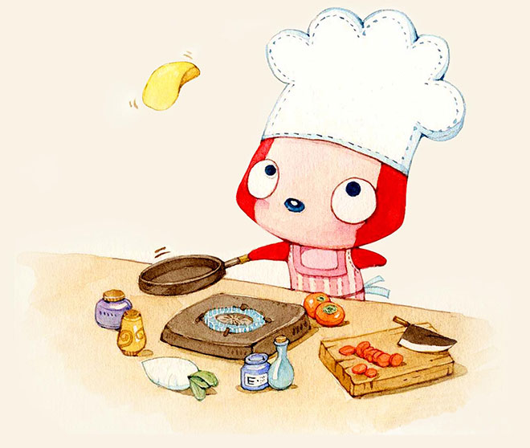

Herra ❤ Bagas Forever in love
Tekan keyboard "↓" mulai melihat pengakuan romantis seorang Pria
Di masa lalu, Bagas selalu hidup sendiri, menikmati kesendirian dan mendambakan cinta.

Berjalan sendirian

Duduk di bukit sendirian sambil memandang langit

Naik kereta Sendirian

Berpergian seorang diri

Namun dia tetap optimis, tersenyum, dan menunggu

Hidup ini penuh dengan pasang surut

Dia selalu berusaha mengatasi nya

Dengan senyuman dan tertawa

Hidup tidak akan selalu berjalan mulus

Tapi dia selalu menghadapinya dengan berani
Selalu siap menerima tantangan hidup


Tapi di mana cinta Bagas?
Di cermin? Dia tak percaya.

Ia pergi bertanya pada pohon besar, dimana cintaku?
Pohon itu mengatakan kepadanya bahwa mungkin itu tidak jauh.

Jadi, Bagas terus bergerak maju sendirian.
Berjalan menuju arah tak tentu

Sampai suatu hari Bagas bertemu Herra

Bagas sangat menyukai Herra. Karena Kepribadian yang Herra miliki, Herra seorang sangat ramah serta periang

Namun apakah Herra akan menyukai Bagas?


Bagas ingin...

Bagas ingin bersama Hera
Maka Bagas sering mengajak Hera untuk Bertemu

Lalu mereka berdua pergi keluar bersama

Bagas membawa Herra pulang pada malam hari dengan aman

Sampai larut malam
Bagas pulang sendirian lagi

Lalu Bagas tertidur dengan bahagia, dan dalam mimpinya Bagas akan bersama Herra
Bagas ingin menjadi asisten belanja Herra

Kemudian, Herra dan Bagas pergi ke banyak tempat bersama-sama.

Bagas juga ingin menjadi pasangan pecinta kuliner dengan Herra

Lalu mereka akan terus bersama.

Kemudian, Bagas mulai mempelajari banyak hal untuk membahagiakan Herra

Berusaha
Membahagiakan Herra adalah keharusan yang Bagas tanamkan

Kemudian mereka bersama sama menghabiskan waktu bercerita sambil jalan jalan
Bagas akan merasa sangat bahagia.
Karena dia punya rumah
Tempat dimana Herra berada

Mereka mungkin bertengkar sesekali.

Bagas tidak menginginkan ini


"Aku pasti telah melakukan kesalahan", Bagas akan berpikir seperti ini
Jika Herra tidak ada kabar, Hati Bagas merasa sedih dan khawatir

Jika tidak ada Herra di samping Bagas


Bagaimana Bagas bisa terbang lebih tinggi dan lebih jauh?
Bagas tidak menginginkan ini. Dia ingin mengubah dirinya demi Herra.
Bagas mencari tahu apa yang disukai Herra, sehingga dia pasti akan membahagiakannya dalam segala hal.


Bagas ingin terus bersama Herra selamanya
Cinta itu seperti bunga dan tanaman
Perlu dirawat setiap hari dengan perasaan

Sampai suatu hari Bagas terpikirkan sebuah ide.
Bagas mulai mempersiapkan kejutan


Menyaksikan kejutan yang dipersiapkan sedikit demi sedikit Bagas sangat senang Karena dia membayangkan bahwa ketika Herra melihat hadiah tersebut Herra akan menunjukan senyum bahagia

Pikirkan tentang masa depan yang mungkin mereka miliki Berdua mengelilingi dunia bersama<3<3 Bagas bahagia memiliki Herra
Bagas akan terus bekerja keras
Untuk kastil impian dia dan Herra


Bagas sangat bahagia karena bertemu Herra. Ia percaya bahwa setiap hari di masa depan akan bahagia. ❤❤❤ Sederhananya, merasakan setiap momen dengan Herra.❤❤❤ Bagas ingin menjalani hidup bahagia bersama Herra.


Seberapa jauhkah selamanya?
Satu detik lebih lama dari waktu selamanya, Bagas akan mencintai Herra selamanya
Seberapa besar dunia ini?
Ke mana pun kamu pergi, dunia ini sebesar itu
Sekarang sudah 5 bulan kita menjalin hubungan, Bagas selalu berusaha untuk membahagiakan Herra kapanpun dan dimanapun


Karna Bagas sangat mencintai Herra dengan seluruh hatinya

Terima kasih untuk terus ada mencintai dan menyayangi aku <3
Kepada mu aku akan terus memberikan yang ada agar bisa membahagiakan kamu selalu
Herra, aku cinta kamu
Tulisan dari pada Bagas Akbar G, orang yang selalu mencintai Herra dengan seluruh hati nya
-- Tekan tombol "Esc" untuk kejutan